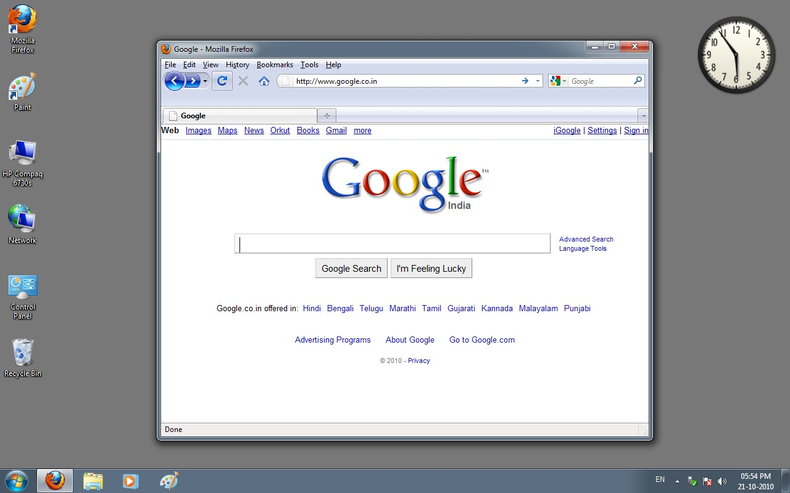
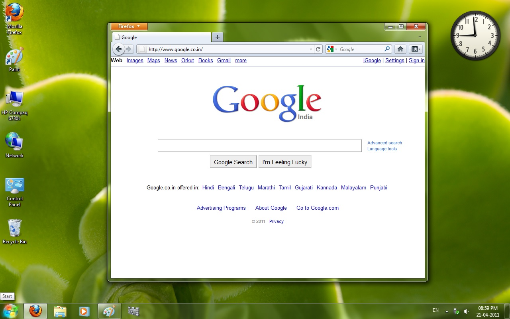

How Google International Variants changed in 6 months (2010 and 2011)
Oct 21, 2025 | 11:00 PM IST
@NiralBhatt
Overview
- The first image is from 21 October 2010 (exactly 15 years old from today).
- The second image is from 21 April 2011 (exactly 14 and a half years old from today).
- This highlights how Google India’s interface and code changed significantly in just 6 months.
Browser Changes
- The first image shows Firefox 3.6.1 (released 19 October 2010).
- The second image shows Firefox 4.0 (released 22 March 2011), which introduced a new UI after Firefox 3.0 (2008).
- Both are different versions of the same browser, showing noticeable UI changes.
Logo Code Updates
- In August 2010, Google India’s logo code was updated.
- Previously, the logo used four separate images in a table, with “India” styled using
<font> tags.
- The new version uses one background image in a
<div> and positions “India” with CSS.
- This unified the logo across country variants and simplified maintenance, so if next time any logo change needed it would be easier to implement across all. This changed kept the same old 1999 logo, which was replaced for the first time in November of the same year.
Major Logo Overhaul
- On 15 November 2010, Google implemented a new logo in international variants.
- Changes included a shaded yellow “o,” removal of shadows, and removal of “TM.”
- Gmail and Google Apps also updated their logos to match the new design.
Significance
- This post shows how quickly technology, design, and user experiences evolve.
- It emphasizes the importance of adaptation, modernization, and keeping up with progress in any field.
Images

Image 1 - Google India on 21 October 2010

Image 2 - Google India on 21 April 2011
© 2025 Niral Bhatt. All rights reserved.